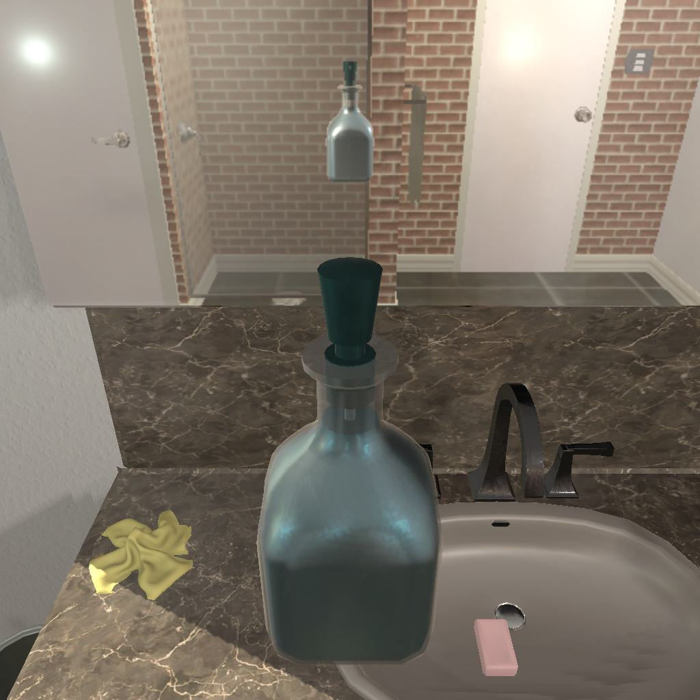

---------------------------------------------------------task: 27---------------------------------------------------------
--------------------------------------------------------------------------------------------------------------------------------------------------------------------
--------------------------------------------------------------------------------------------------------------------------------------------------------------------
Step:--------------------------------------------------------------------------7-------------------------------------------------------------------------------
----------------------------------------
VLM Prompt:
Image1:
Image2:
Image3:
**Instruction**
1. Analyze the provided images to identify all visible household objects and compare the difference between images (e.h. whether the object is opened or not and taken on hand or not), focusing on those relevant to the task description "find two soapbottle and put them in garbagecan."
2. Use the analysis of images and the task hint "The agent must find an object of the desired type, pick it up, find the correct location to place it, put it down there, then look for another object of the desired type, pick it up, return to previous location, and put it down there with the other object." to answer the question: what is the most reasonable action in the choices for the task description "find two soapbottle and put them in garbagecan"?
3. Decide and write the answer using the template: The answer is: (i): , where i is the real number. If there is no desired object in images, search every place based on **Initial Observation** to find the object. And if no one is exactly correct, choose a similar answer.
**Initial Observation**
You are in the middle of a room. Looking quickly around you, you can see countertop (1), sinkbasin (1-2), sink (1-2), garbagecan (1), drawer (1-2), toilet (1), handtowelholder (1)
**Answer Choices**
(1): go to sinkbasin 1
(2): go to sink 1
(3): go to garbagecan 1
(4): go to drawer 1
(5): go to drawer 2
(6): go to sink 2
(7): go to sinkbasin 2
(8): go to toilet 1
(9): go to handtowelholder 1
(10): put soapbottle 2 in/on countertop 1
(11): examine soapbottle 2
(12): examine countertop 1
**Answer**
Let's think step by step by following the instructions.
----------------------------------------
----------------------------------------
Original Response:
1. In all three images, we can see a soap bottle on the countertop near the sink basin. There is no visible difference in the position or state of the soap bottle between the images. It is neither opened nor taken in hand. There is also a hand towel next to the soap bottle on the countertop.
2. Based on the task description, "find two soapbottle and put them in garbagecan," and the task hint provided, the agent must first locate the soap bottles. Since we can only see one soap bottle in the images, the agent must search for another one. Once both soap bottles are found, the agent must pick them up and put them in the garbage can.
3. The answer is: (1): go to sinkbasin 1. This action is the most reasonable as the agent is already at countertop 1, where the visible soap bottle is located. The agent should examine or pick up this soap bottle before looking for the second one. If there is no second soap bottle on the countertop or sink basin, the agent should then proceed to search other locations based on the initial observation.
----------------------------------------
----------------------------------------
>>> Refine Original VLM Response and Get Pure Action: go to sinkbasin 1
----------------------------------------
-----------------------------------------------------------------
Running time: 15.571839332580566 seconds
Total Money: 17.007069999999995
-----------------------------------------------------------------
-----------------------------------------------------------------
Text Observation:You arrive at loc 1. On the sinkbasin 1, you see a faucet 2, a cloth 1, and a soapbar 3.
-----------------------------------------------------------------
UNSUCCEED